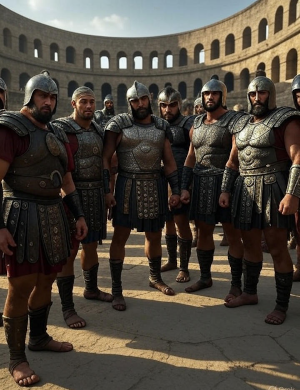

In the kingdom of Numeria, the Coliseum of Warriors is filled with a sequence of \(n\) warriors, each with a positive strength value.The king enjoys watching but is very demanding: for any segment of warriors he points to, he wants to know:
The scribes must answer quickly, or risk angering the king. You have been summoned to write a program that answers the king’s queries.
The first input line contains two inters integer \(n\) and \(q\), respectively the amount of warriors and queries.
The second line contains \(n\) integers \(w_1, w_2, \ldots, w_n\): the strength of the warriors in the sequence.
The next \(q\) lines describe the queries: each contains two integers \(a \, b\) describing the query range.
\(q\) lines, each with two integers separated by a space describing the answer to the respective query:
Example input
6 4 2 5 1 5 3 5 1 6 2 4 3 5 5 5
Example output
5 3 5 2 5 1 3 1